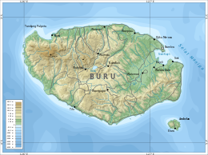

<!DOCTYPE html>
<html>
  <head>
    <title>web.wisata pulau buru </title>
    <style type="text/css">
      .judul{
        text-align: center;
        width: 100%;
        padding-top: 30px;
        min-height: 100px;
        background-color: #009688; 
      }

      nav{
        float: left;
        width: 20%;
        height: 900px;
      }
      .gambar{
        float: left;
      }
      .gambar img{
        height: 300px;
        padding: 10px;
      }
      .gambar0 img{
        height: 100px;
        padding: 10px;
      }

      nav ul {
        margin-bottom: 100px;
      }
      .sosial{
        float: right;
      }
      .sosial a img{
        height: 30px;
      }
      .clear{
        clear: both;
      }

     
    </style>
  </head>
    <body bgcolor="lightblue">
    <div class="wrapper">
    </div>
  </body>
</html>
<header>
  <div class="judul">
                            <h2>SELAMAT DATANG DI WEBSITE WISATA PULAU BURU </h2>
  </div>

      <div class="sosial">
        <ul>
            <a href="#"></a> |
            <a href="#"></a>    |
            <a href="#"></a>  |
        </ul>
      </div>
      <div class="clear"></div>
   <hr>
  
</header>
 <nav>
    <ul>
  <li><a href="current"="current">Home</a></li>
  <li><a href="current"="current">Beranda</a></li>
  <li><a href="current"="current">Profil</a></li>
  <li><a href="current"="current">Tentang</a></li>
   </ul>
   <div class="gambar0">
      
   </div>
  </nav>
  <div class="gambar">
      
  </div>
<section class="courses">
 <article>
  
   <hgroup>
    <li><a href="">Daftar wisata</a></li>
        <h3>Permandian</h3>
        <h3>pantai</h3>
        <h3> puncak</h3>
        

   </hgroup>
                          <p>  wisata yang ada di pulau buru pasput merupakan tempat wista yang jarang di ketahui para pengunjung luar  khusunya para pecinta travelin.Di tempat wisata pulau buru ini memiliki keindahan yang tak terbayankan dan jika kalian berda di tempat tersebut maka kalian tidak akan merasa bosan.</p>
 </article>    
 <article>
   <figure>
 
  
   </figure>
   <hgroup>
        <h2>pulau tomahu</h2>
  <h3>pantai pulau tomahu</h3>
   </hgroup>
                        <p>Sejumlah objek wisata alam yang menarik terletak di Kecamatan Kepala Madan sehingga memudahkan wisatawan untuk mengunjunginya karena jaraknya yang berdekatan. Pulau Tumaho sekitar 160 km sebelah barat pusat kota Namlea, tepatnya di Desa Nanali, Kecamatan Kepala Madan. Untuk mencapai Pulau Tumaho anda bisa menggunakan dua alternatif. Pertama jalur darat dengan menggunakan mobil menuju Desa Air Buaya ± 90 km dengan jarak tempu 2 jam, setelah itu anda bisa menyewa speedboat masyarakat setempat dengan harga 700 ribu PP menuju Pulau Tumaho, dengan menggunakan mobil anda bisa mampir sebentar menikmati indahnya Pantai Jikumarasa dan teduhnya Telaga Namniwel di Desa Waiperang. Kedua dengan menggunakan Kapal Motor yang berangkat dari pelabuhan Namlea langsung menuju Pulau Tumaho dengan jarak tempuh 6 jam dan hanya membutuhkan biaya 100 ribu, dengan jalur laut anda bisa menikmati keindahan pantai sepanjang perjalanan</p>
 
</body>
</html>